PyDIP basics
The PyDIP package is called diplib, and we recommend to import it as dip, which mirrors the
namespace used by the DIPlib library in C++:
import diplib as dip
The image object
Images are represented by an object of class dip.Image. The constructor has many different
syntaxes, the basic one takes as input the image sizes, the number of tensor elements (which is
our way to talk about channels), and the data type.
The image sizes are ordered x, y, z, etc. For a 2D image this means you pass (width, height).
a = dip.Image((20, 10), 1, "UINT8") a.Fill(3)
The number of tensor elements defaults to 1 (i.e. a grayscale image), and the data type defaults to single-precision float.
Note that the image will not be initialized, the pixel values will be undefined. We used the
method Fill() to assign a constant value to the image.
Indexing into a dip.Image object works similarly to other array types in Python, but not identically.
The first index is x (horizontal), the second one is y (vertical), and the end value of the range
is included.
Note that b below is a view of a and shares the same data segment.
b = a[4:-1, 0:4] b.Fill(55) a[:10, :3] = 100 a[10:15, 5:7] = 200
See Indexing for more information.
Images can be displayed using the Show() method. 'normal' sets the range to 0-255. Other
options are described in Displaying Images. By default, the image is linearly stretched to the
minimum and maximum values.
a.Show('normal')
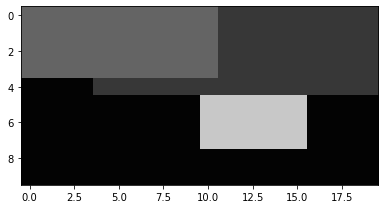
Operators are generally applied on a per-pixel basis.
m = a >= 100 m.Show()
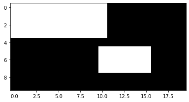
Images can be indexed by binary images, resulting in a 1D image containing only the selected pixels.
a[m].Show('normal')
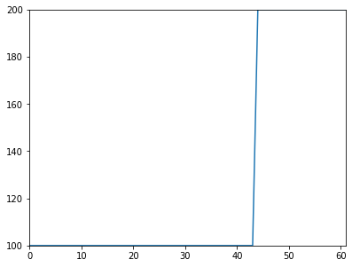
Binary image indexing can also be used for assignment.
a[m] = 176 a.Show('normal')
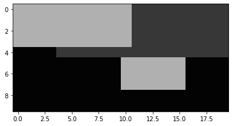
A dip.Image object uses the NumPy buffer interface. This means that you can use an dip.Image object
everywhere where you can use a NumPy array, and you can use a NumPy array anywhere where you
would use an dip.Image object.
Here we create a NumPy array and display it like it were a dip.Image (remember that NumPy uses
height as the first dimension and width as the second one, this is reverse from how PyDIP does it):
import numpy as np np.random.seed(0) b = np.random.rand(a.Size(1), a.Size(0)) dip.Show(b)
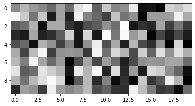
Then we add the NumPy array to our image:
a += 30 * b a.Show()
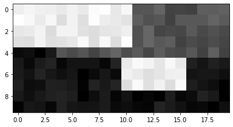
Then we call a NumPy function with a dip.Image as input, and a PyDIP function with a NumPy array as input:
np.mean(a) dip.Mean(b)[0][0]
See Combining PyDIP with NumPy for more details.
Note that the dip.Image object can contain images of any number of dimensions, including 0 (a single pixel).
The Show() method only displays 1D or 2D images, for images with more dimensions, it will display a projection.
Read this method’s help to learn how to control the projection mode, etc. Alternatively, use dip.viewer.Show()
for an interactive image display that shows images with any number of dimensions, see Displaying Images.
Loading images from file
PyDIP has an image reading function dip.ImageRead(), which will use the built-in image readers
(ICS, TIFF, JPEG, PNG) and, if available, the Bio-Formats image reader (which recognizes over a hundred
different file types, see DIPjavaio, or how to use Bio-Formats).
a = dip.ImageRead('examples/cermet.ics') a.Show()
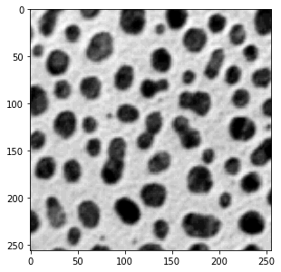
It is also possible to use imageio.v3.imread(), matplotlib.pyplot.imread(), cv2.imread(), etc., which
all return a NumPy array that can be directly used by PyDIP functions, or converted into a dip.Image object.
import matplotlib.pyplot as plt b = dip.Image(plt.imread('examples/cameraman.tif')) b.Show()
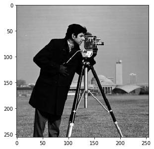
Color images
Color images are supported too, it’s a bit different from what you’re likely used to. A 2D color image is seen as 2D, each pixel has three values. This affects indexing! Here we give a little demo, see Tensor images and color images for more details.
a = dip.ImageRead('examples/DIP.tif') # This is an sRGB image a[50:100, :] # spatial indexing is the same as for a scalar 2D image a(0) # this is the red channel a[128, 45] # this returns a Python list with all the values for the pixel a[128, 45][0] # this returns the red value of one pixel a(0)[128, 45] # this also, but as a Python list
PyDIP knows a lot of color spaces. The Show method automatically converts to RGB for display.
a.ColorSpace() # == 'sRGB' b = dip.ColorSpaceManager.Convert(a, 'Lab') b.ColorSpace() # == 'Lab' b.Show()
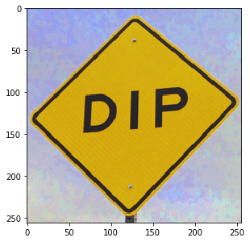
a(2).Show() # B channel from RGB image
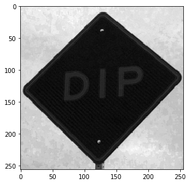
b(2).Show() # b channel from Lab image
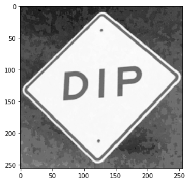
Filtering
There are many image filtering functions available, which you can discover by exploring the DIPlib
documentation. Function names and parameters in Python are identical to the names in the DIPlib library.
And just like in the DIPlib library, there exists a version of the function where the out parameter
is the return value. Here we do some simple color filtering to demonstrate.
b = dip.Gauss(a, 5)
is the same as
b = dip.Image() dip.Gauss(a, out=b, sigmas=5)
The image b will be reforged (it gets a new data segment) if its properties are not correct.
This syntax is most useful when working in-place.
Note that the out argument must always be given as a keyword argument, and all subsequent arguments as well.
In the syntax that returns the output image, the keyword is optional.
b.Show()
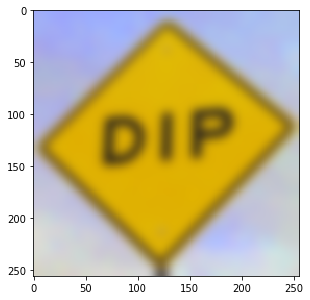
b = dip.BilateralFilter(a, spatialSigmas=5, tonalSigma=30) b.Show()
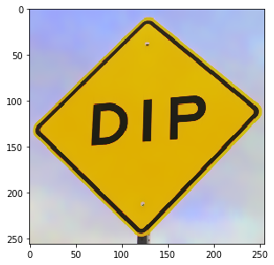
Some filters are specific for gray-value images (these are called “scalar images” everywhere in the documentation). Here we apply such an image by first converting the image to gray scale.
b = dip.ColorSpaceManager.Convert(b, 'gray') dip.Canny(b, upper=0.99).Show()
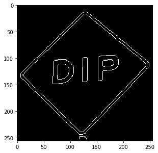
See Filtering for more details about input and output arguments to DIPlib function calls.
Measurement
dip.MeasurementTool can measure quite a lot of features for objects in an image, see dip::MeasurementTool.
This is a simple example usage.
We first read the ‘cermet’ image, and record its pixel size (this is an old example image, the actual pixel size
has gotten lost over the years). If an image file contains the pixel size in the metadata, it will automatically
be recorded in the dip.Image object and used by measurement functions and some other functions.
Note that pixels do not need to be isotropic, it is possible to give a different pixel size for each dimension.
a = dip.ImageReadICS('examples/cermet.ics') a.SetPixelSize(1, "um") # "um" is easier to type than "μm", but they mean the same thing a.Show()
Next, we threshold and label the image, then measure some basic features. Because ‘Solidity’ depends on the ‘ConvexArea’ measurement, we get that one too in the output.
b = a < 120 b = dip.EdgeObjectsRemove(b) b = dip.Label(b, minSize=30) m = dip.MeasurementTool.Measure(b, a, ['Size', 'Solidity', 'Statistics']) print(m)
| Size | Solidity | Statistics | ConvexArea | -- | ---------- | ---------- | ----------------------------------------------------- | ---------- | | | | Mean | StdDev | Skewness | ExcessKurtosis | | | (μm²) | | | | | | (μm²) | -- | ---------- | ---------- | ---------- | ---------- | ---------- | -------------- | ---------- | 1 | 262.0 | 0.9668 | 45.34 | 30.82 | 0.7216 | -0.6831 | 271.0 | 2 | 63.00 | 0.9474 | 86.35 | 13.41 | 0.2313 | -0.5471 | 66.50 | 3 | 243.0 | 0.9293 | 75.09 | 21.16 | 0.1711 | -0.9723 | 261.5 | 4 | 209.0 | 0.9698 | 61.63 | 25.80 | 0.3937 | -0.7994 | 215.5 | 5 | 462.0 | 0.9665 | 62.10 | 20.27 | 0.7329 | 0.1613 | 478.0 | 6 | 611.0 | 0.9745 | 81.17 | 17.92 | -0.3812 | -0.2219 | 627.0 | <snip>
The dip.Measurement object m can be indexed in three levels: the measurement name (‘Statistics’),
the object number (30), and the measurement value within the selected measurement (2):
m['Statistics'][30] # returns a list with the four statistics values m['Statistics'][30][2] # returns a float m[30]['Statistics'][2] # identical to the above, the order of the two first indices is irrelevant
Leaving out one of the indices returns the full row or column:
print(m[30]) print(m['Solidity'])
These objects can be indexed further as above, or be converted to a NumPy array:
np.asarray(m[30]) # returns a 2D NumPy array for a single row of the measurement table np.asarray(m['Solidity']) # returns a 2D NumPy array for a column
See Measurement for a more in-depth look at the measurement object.